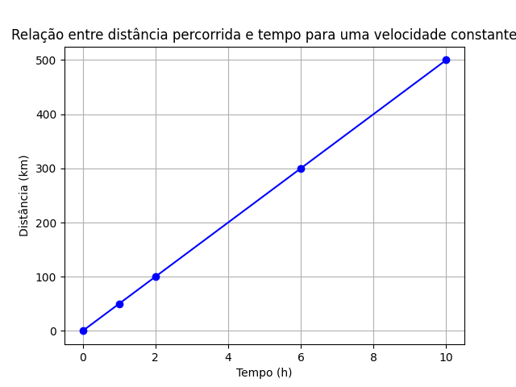
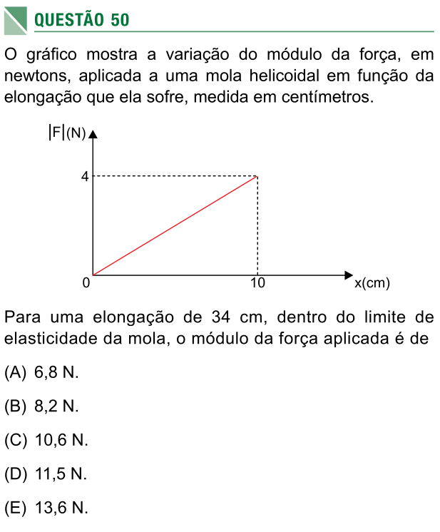
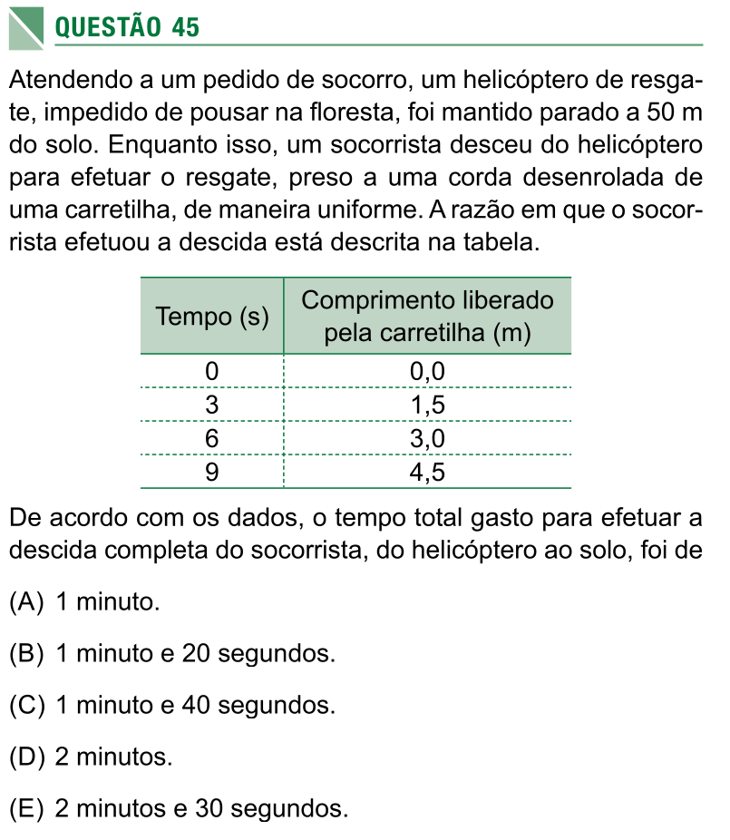

Table of Contents
Orientações:
Questão 1
Associe corretamente cada grandeza da coluna A com a unidade de medida correspondente na coluna B. Escreva a letra da unidade ao lado do número da grandeza.
| Coluna A (Grandeza) | Coluna B (Unidade) |
|---|---|
| 1. Massa | a. °C (grau Celsius) |
| 2. Temperatura | b. kg (quilograma) |
| 3. Densidade | c. L (litro) |
| 4. Volume | d. s (segundo) ou h (hora) |
| 5. Tempo | e. m (metro) ou km (quilômetro) |
| 6. Velocidade | f. g/mL ou kg/L |
| 7. Distância | g. km/h ou m/s |
Exemplo: Massa é medida em kg, então 1 corresponde a b.
Questão 2
Um líquido tem volume de 500 mL e massa de 600 g.
a) Com esses dados, qual grandeza física você pode calcular? (Dica: é uma propriedade que relaciona massa e volume.)
b) Calcule o valor dessa grandeza e escreva o resultado com a unidade correta.
Questão 3
Imagine um automóvel que se move de maneira uniforme (velocidade constante) durante 2 horas e percorre uma distância de 140 km.
a) De acordo com as grandezas da questão 1, qual delas pode ser calculada com esses dados?
b) Calcule essa grandeza e indique a unidade de medida.
Questão 4
O mercúrio é um metal líquido com densidade de \(13,5\) g/mL.
a) Qual é a massa de 10 mL de mercúrio?
b) Qual é o volume ocupado por \(40,5\) g de mercúrio?
Questão 5
Em um experimento, foram medidas massas e volumes de amostras de mel, e a densidade encontrada foi \(1,5\) g/mL.
a) Calcule o volume correspondente a uma massa de 10 g de mel.
b) Complete a tabela abaixo com quatro pares de valores (massa e volume) que sejam compatíveis com essa densidade.
Lembre-se:
\[ d = \frac{massa}{volume} \]
| Massa (g) | Volume (mL) |
|---|---|
Questão 6
A velocidade média de um móvel é dada pela fórmula:
\[ v = \frac{d}{t} \]
onde:
- \(v\) é a velocidade,
- \(d\) é a distância percorrida,
- \(t\) é o tempo gasto.
a) Qual é a velocidade de um carro que percorre 90 km em uma hora e meia? (Lembre-se: 1,5 h = 1 hora e meia.)
b) Mantendo essa mesma velocidade, quanto tempo o carro levaria para percorrer 210 km?
gráfico - questões 7, 8 e 9
O gráfico abaixo será usado nas questões 7, 8 e 9.

Figure 1: Gráfico de distância em quilômetros por tempo em horas.
Questão 7
O gráfico acima representa o movimento uniforme de um carro em uma rodovia (distância percorrida em função do tempo).
a) Qual é a distância percorrida após 6 horas de viagem?
b) E após 3 horas?
c) Calcule a velocidade do carro usando a fórmula \(v = \frac{d}{t}\). Escolha um ponto do gráfico para fazer o cálculo.
Questão 8
Com base no gráfico da questão 7, construa uma tabela relacionando a distância percorrida (em km) e o tempo (em h) para os instantes: 0 h, 2 h, 4 h, 6 h e 8 h.
| Tempo (h) | Distância (km) |
|---|---|
| 0 | |
| 2 | |
| 4 | |
| 6 | |
| 8 |
Questão 9
a) Considere um segundo carro que se move com o dobro da velocidade do primeiro (da questão 7). No mesmo sistema de eixos (distância × tempo), desenhe o gráfico do movimento desse segundo carro, supondo que ele também parte do repouso (posição inicial zero).
b) Agora, imagine um terceiro carro com a mesma velocidade do segundo, mas que começa seu trajeto a 100 km do ponto de referência (ou seja, no instante \(t = 0\), sua posição é 100 km). Para ajudá-lo a construir o gráfico, preencha primeiro a tabela abaixo com as posições nos tempos indicados. Depois, desenhe o gráfico posição × tempo.
| Tempo (h) | Posição (km) |
|---|---|
| 0 | 100 |
| 2 | |
| 4 | |
| 6 | |
| 8 |
Dica: a posição aumenta com o tempo na mesma taxa (velocidade) do item (a).
Questão 10 - Questão 50 do SIS1/UEA-2016

Figure 2: Questão 50 do SIS1 - 2016
Questão 11 - Questão 45 do SIS1/UEA-2018

Figure 3: Questão 50 do SIS1 - 2016